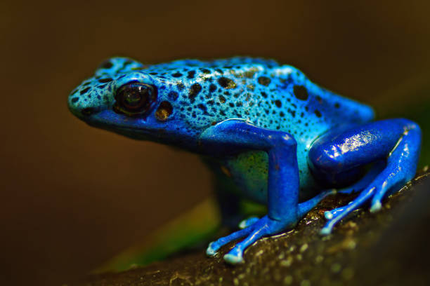

Bem-vindo ao site onde você encontra as informações sobre o sapo da espécie Dendrobates Azureus

O sapo 'Dendrobates Azureus' ou mais conhecido como sapo-flecha-de-veneno-da-Amazônia tem aproximadamente 4cm e uma coloração azulada bastante "atrativa" essa é uma das poucas espécies que se pode diferenciar os sexos através dos dedos, os machos tem a cabeça dos dedos em forma de coração